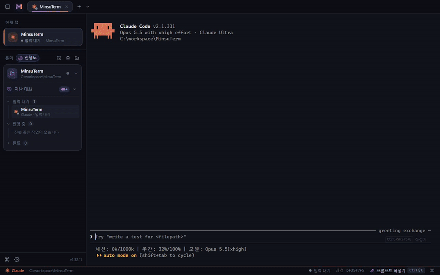
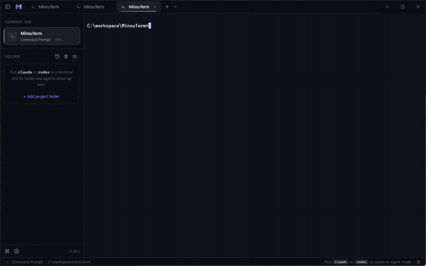
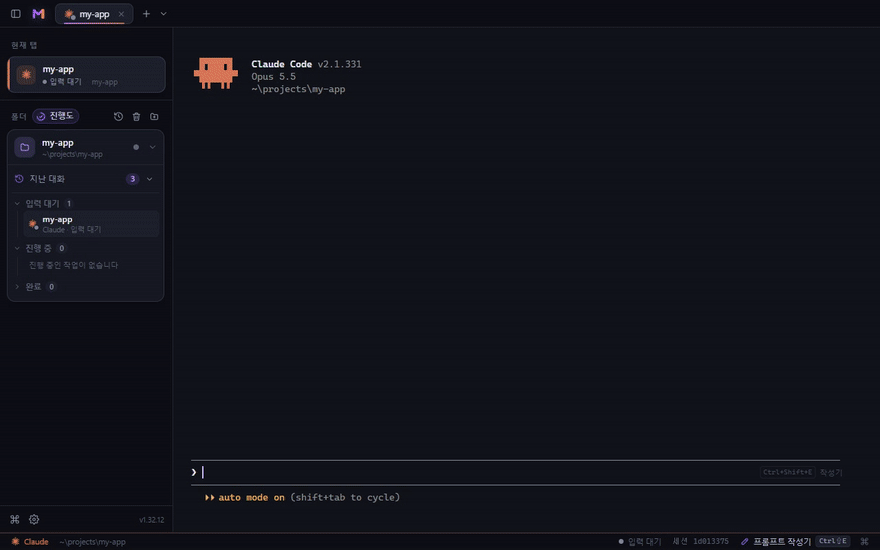
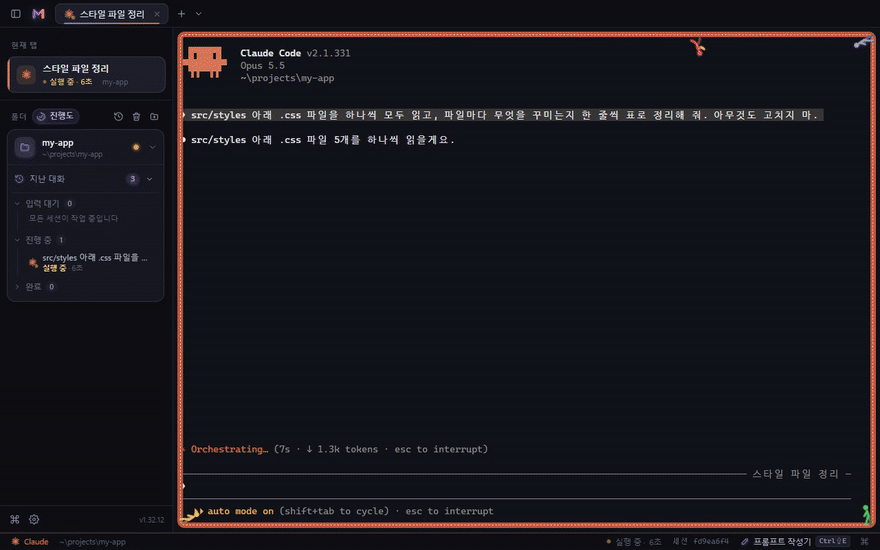
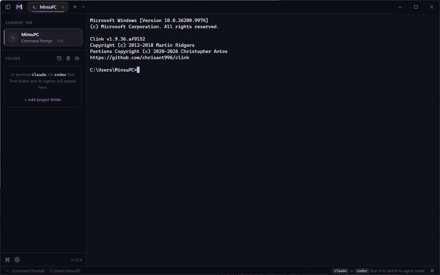

MinsuTerm
Claude Code · Codex CLI 사용자를 위한 터미널
A terminal for people who work with Claude Code and Codex.

설치만 하면 바뀌는 것
🤖 에이전트 뷰
프롬프트 하나가 작업 하나. 폴더별로 입력 대기 · 진행 중 · 완료를 자동 정리합니다.
👾 서브에이전트 하수인
에이전트가 서브에이전트를 띄우면 작업 아래에서 하수인이 일하고, 끝나면 체크.
🔔 놓치지 않는 알림
작업이 끝나거나 선택지를 물어보면 말풍선 배지와 데스크톱 알림.
💾 세션 복원
다시 열면 탭과 Claude / Codex 대화가 그대로 이어집니다.
🎨 수백 가지 꾸미기
작업 중 테두리, 완료 축하, 배경 애니메이션, 타이핑 효과와 소리, 다크 · 라이트 테마.
🌏 4개 언어
한국어 · English · 日本語 · 中文 - 꾸미기 항목 이름까지 전부.
화면 분할

프롬프트 작성기

작업 중 테두리 · 테마

배경 · 타이핑 효과

자주 묻는 질문
Claude Code를 쓰기 좋은 터미널이 있나요?
MinsuTerm이 바로 그 용도의 터미널입니다. claude를 실행하면 작업 진행, 서브에이전트, 선택 대기를 사이드바에 보여 주고, 끝나면 알려 주고, 다시 열면 대화를 이어 줍니다.
Codex CLI도 되나요?
네. codex도 같은 방식으로 작업 현황, 서브에이전트, 세션 복원을 지원합니다.
무료인가요? 데이터를 보내나요?
무료 · 오픈소스(MIT)입니다. 네트워크 통신을 하지 않고, Claude Code / Codex가 내 PC에 저장한 기록 파일만 읽습니다.
macOS에서 "손상되었다"고 나와요.
아직 Apple 공증 전이라 생기는 메시지입니다. 압축을 푼 폴더에서 xattr -cr . 후 bash "MinsuTerm 설치.command"를 실행하세요.